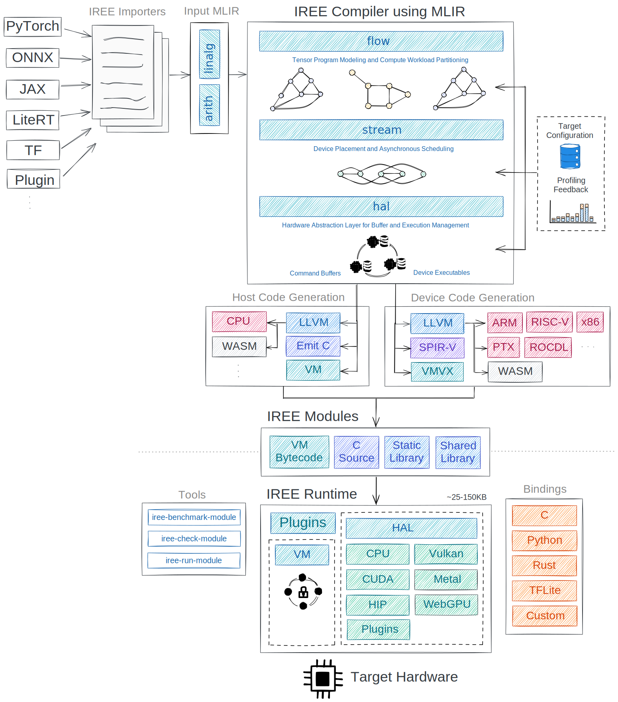

IREE¶
IREE (Intermediate Representation Execution Environment1) is an MLIR-based end-to-end compiler that lowers Machine Learning (ML) models to a unified IR optimized for real-time inference on mobile/edge devices against heterogeneous hardware accelerators. IREE also provides flexible deployment solutions for its compiled ML models.
Key features¶
- Ahead-of-time compilation of scheduling and execution logic together
- Support for dynamic shapes, flow control, streaming, and other advanced model features
- Optimized for many CPU and GPU architectures
- Low overhead, pipelined execution for efficient power and resource usage
- Binary size as low as 30KB on embedded systems
- Debugging and profiling support
Support matrix¶
IREE supports importing from a variety of ML frameworks:
- TensorFlow
- TensorFlow Lite
- JAX
- PyTorch
The IREE compiler tools run on Linux, Windows, and macOS and can generate efficient code for a variety of runtime platforms:
- Linux
- Windows
- macOS
- iOS
- Android
- Bare metal
- WebAssembly
and architectures:
- ARM
- x86
- RISC-V
Support for hardware accelerators and APIs is also included:
- Vulkan
- CUDA
- Metal
- WebGPU
Project architecture¶
IREE adopts a holistic approach towards ML model compilation: the IR produced contains both the scheduling logic, required to communicate data dependencies to low-level parallel pipelined hardware/API like Vulkan, and the execution logic, encoding dense computation on the hardware in the form of hardware/API-specific binaries like SPIR-V.

Workflow overview¶
Using IREE involves these general steps:
-
Import your model
Work in your framework of choice, then run your model through one of IREE's import tools.
-
Select your deployment configuration
Identify your target platform, accelerator(s), and other constraints.
-
Compile your model
Compile through IREE, picking compilation targets based on your deployment configuration.
-
Run your model
Use IREE's runtime components to execute your compiled model.
Importing models from ML frameworks¶
IREE supports importing models from a growing list of ML frameworks and model formats:
Selecting deployment configurations¶
IREE provides a flexible set of tools for various deployment scenarios. Fully featured environments can use IREE for dynamic model deployments taking advantage of multi-threaded hardware, while embedded systems can bypass IREE's runtime entirely or interface with custom accelerators.
- What platforms are you targeting? Desktop? Mobile? An embedded system?
- What hardware should the bulk of your model run on? CPU? GPU?
- How fixed is your model itself? Can the weights be changed? Do you want to support loading different model architectures dynamically?
IREE supports the full set of these configurations using the same underlying technology.
Compiling models¶
Model compilation is performed ahead-of-time on a host machine for any combination of targets. The compilation process converts from layers and operators used by high level frameworks down into optimized native code and associated scheduling logic.
For example, compiling for GPU execution using Vulkan generates SPIR-V kernels and Vulkan API calls. For CPU execution, native code with static or dynamic linkage and the associated function calls are generated.
Running models¶
IREE offers a low level C API, as well as several specialized sets of bindings for running IREE models using other languages:
Communication channels¶
- GitHub issues: Feature requests, bugs, and other work tracking
- IREE Discord server: Daily development discussions with the core team and collaborators
- iree-discuss email list: Announcements, general and low-priority discussion
Roadmap¶
IREE is in the early stages of development and is not yet ready for broad adoption. Check out the long-term design roadmap to get a sense of where we're headed.
We plan on a quarterly basis using OKRs. Review our latest objectives to see what we're up to.
We use GitHub Projects to track progress on IREE components and specific efforts and GitHub Milestones to track the work associated with plans for each quarter.
-
Pronounced "eerie" and often styled with the
 emoji ↩
emoji ↩